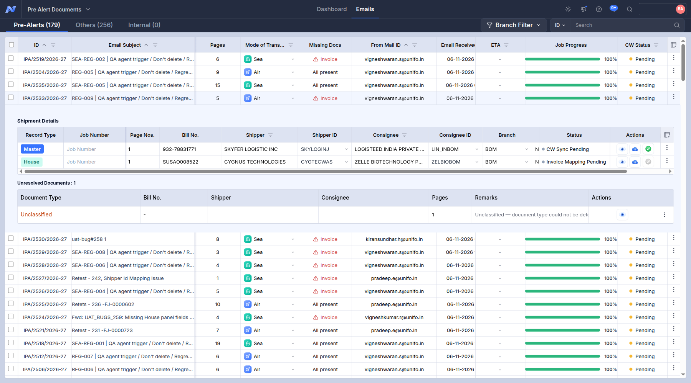

Trace of SEA-REG-003 - IPA-2533-2026-27 (1 screenshots, in the order they were taken)
Probable root cause
- Follow-up emails of this case went to the Others tab (IPA/2532/2026-27): they were not linked to the pre-alert.
- DEBIT NOTE not found anywhere in the pre-alert: look at the classification of the matching page (e.g. another type under the House).
- INVOICE not found anywhere in the pre-alert: look at the classification of the matching page (e.g. another type under the House).
- MANIFEST not found anywhere in the pre-alert: look at the classification of the matching page (e.g. another type under the House).
- PACKING LIST not found anywhere in the pre-alert: look at the classification of the matching page (e.g. another type under the House).
- PO not found anywhere in the pre-alert: look at the classification of the matching page (e.g. another type under the House).
01. Pre-Alerts tab: the pre-alert was not found
01_not_received.png
